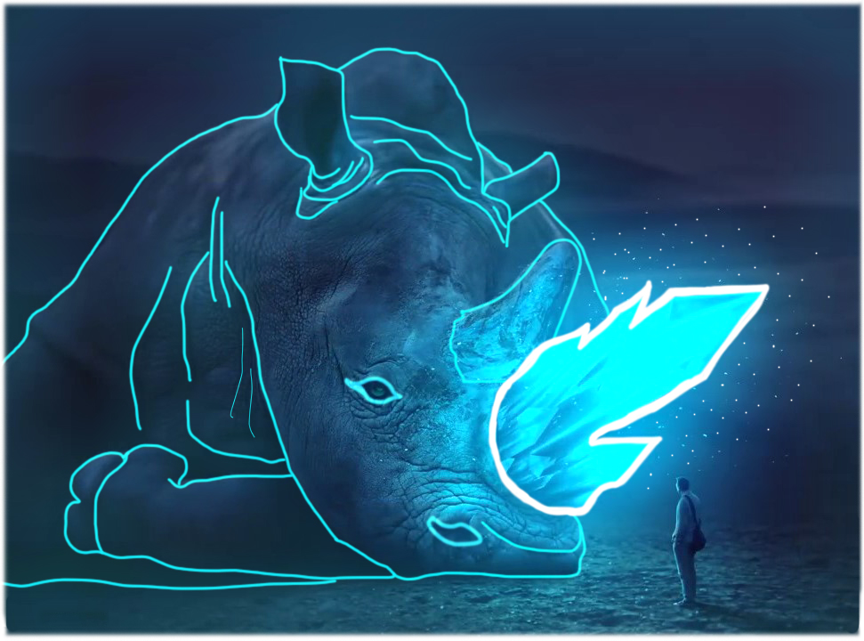

The Glowing Rhino
One (the human standing against the rhino) can learn that even though the Rhino seems almost dead and defeated,
it still harnesses all its power within it's horn. The metaphor suggests that no matter the hardships, no mater the
disorders (Autism, ADHD, visual impairments etc.) within you, there's still LIGHT within you, so let it all out! GLOW UP! LIGHT UP!